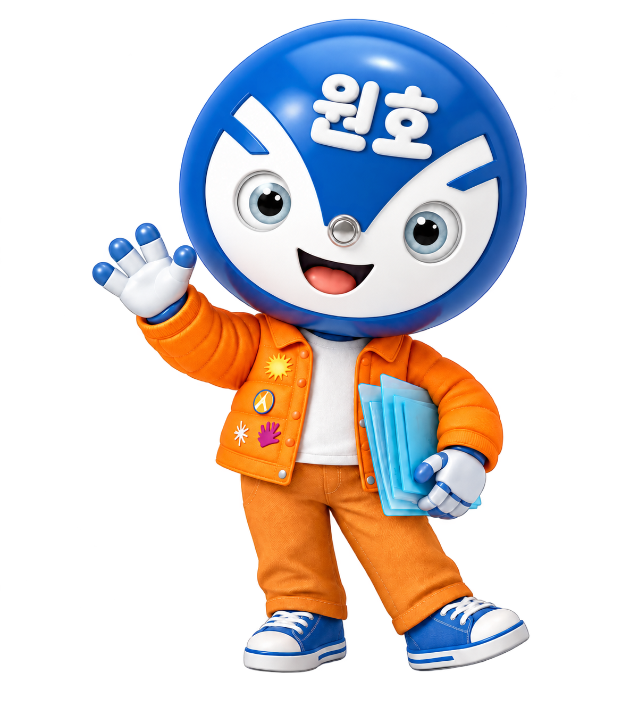
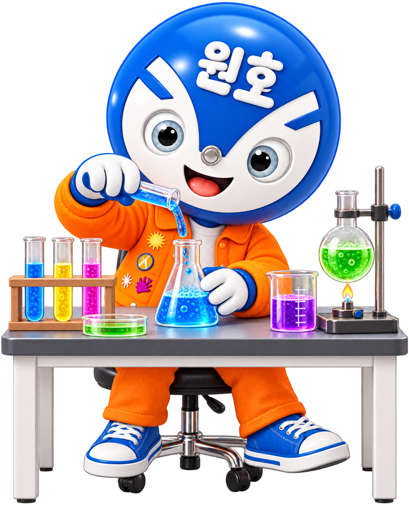
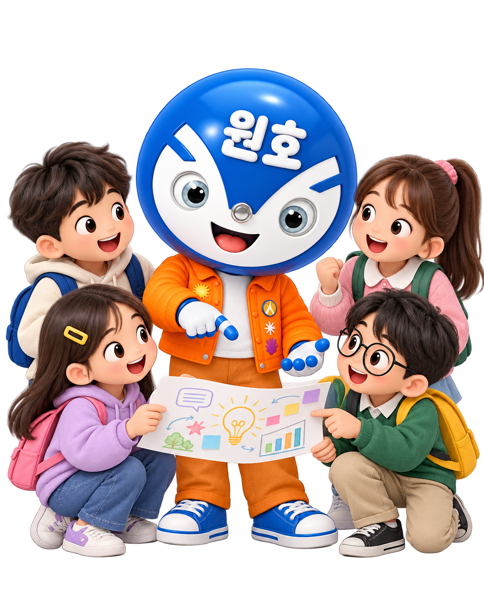
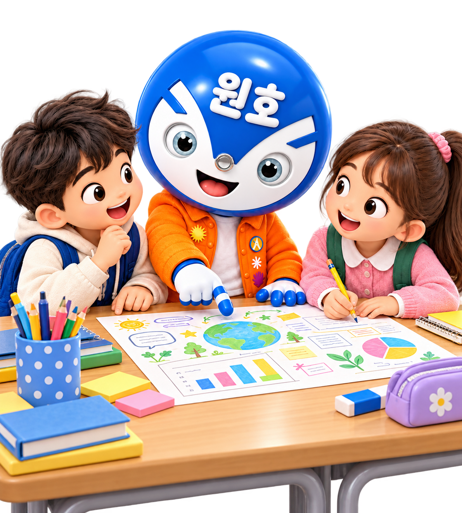

Science과학교육과정 분석·재구성
STEP-UP
프로젝트 기반
창의융합에듀파크 연계
탐구활동으로
과학 핵심 역량 기르기




STEP-UP은
이렇게 이루어집니다
교육과정에서 시작해 질문하고 경험하며,
에듀파크와 연결해 탐구를 확장합니다.
Thinking핵심 탐구 질문 생성
Experience체험 중심의 핵심 탐구 활동
eduPark창의융합에듀파크 탐구·체험
STEP-UP,
이렇게 실천했습니다
기반을 만들고, 탐구를 실행하며,
지속 가능한 탐구 문화를 확산했습니다.
1
기반을 만들다
STEP-UP 운영 여건 조성
- 과학교육 공간 조성
- 교육과정 운영 기반 마련
- 운영 역량 강화
↓
2
탐구를 실행하다
STEP-UP 프로젝트 운영
- STEP-UP 프로젝트 준비
- STEP-UP 프로젝트 실행
- 탐구 중심 프로젝트 평가
↓
3
문화를 확산하다
STEP-UP 탐구 문화 확산
- 과학 배움·나눔 활동
- 학생 동아리 운영
- 과학 탐구·체험 문화 조성
학년별 STEP-UP 프로젝트
학년의 특성과 교육과정을 살린
탐구 프로젝트를 살펴보세요.
종결보고회 현장 안내
오늘의 일정과 공개수업 위치를
한눈에 확인해 보세요.
TODAY'S SCHEDULE
오늘의 일정
13:00–13:20
NOW등록중앙 현관
13:20–14:00
NOW수업 참관각 반 교실
14:20–14:50
NOW학년별 협의회지정 교실
15:10–16:00
NOW종결보고회대강당(원호관)
OPEN CLASS
공개수업 안내
학년을 선택하면 교실 위치와 공개수업 지도안을 확인할 수 있습니다.
CLASSROOM MAP
교실배치도
운동장
대강당
(원호관)
(원호관)
FINAL REPORT MEETING PROGRAM
종결보고회 식순
- 개회사
- 국민의례
- 내빈소개
- 학교장 인사
- 격려사
- 연구학교 운영보고
- 질의·응답
- 도움말씀
- 폐회사